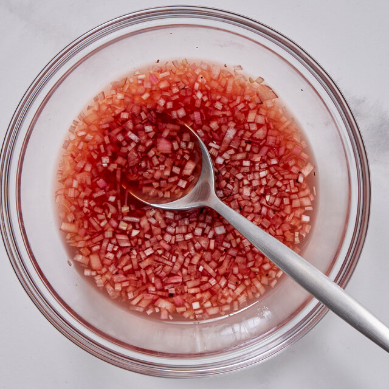

Mignonette

This is a sauce most commonly used for briny seafood such as oysters. It is also used for mussels and shrimp.
Ingredients
- 113g Champagne Vinegar
- 116g Shallots
- 12g Black Peppercorn
Steps
- Brunois the shallots
- Grind the pepper
- Mix the ingredients